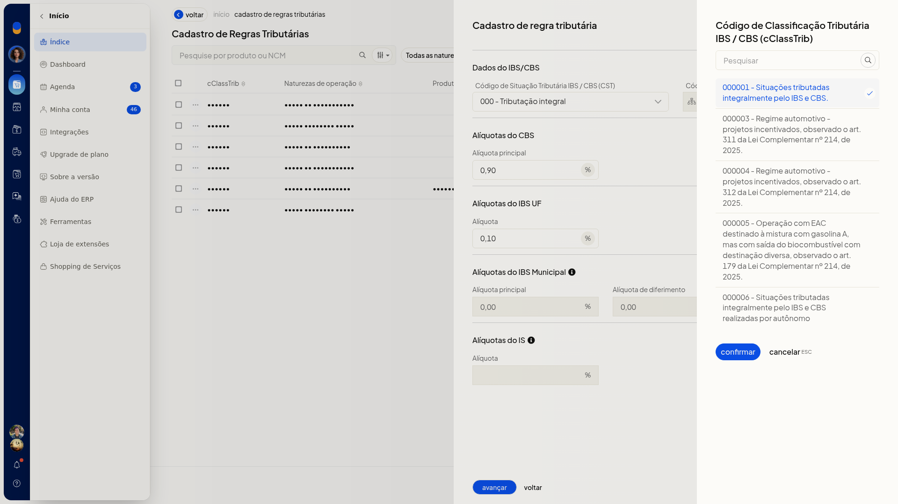
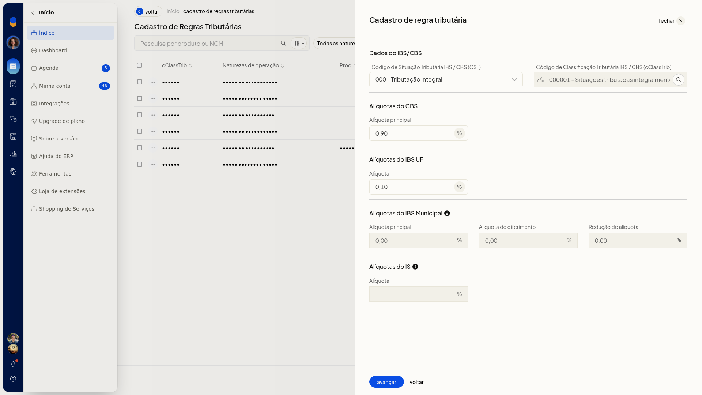
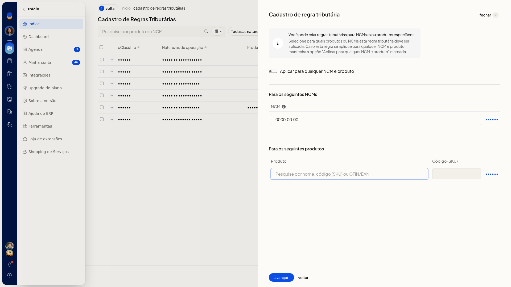
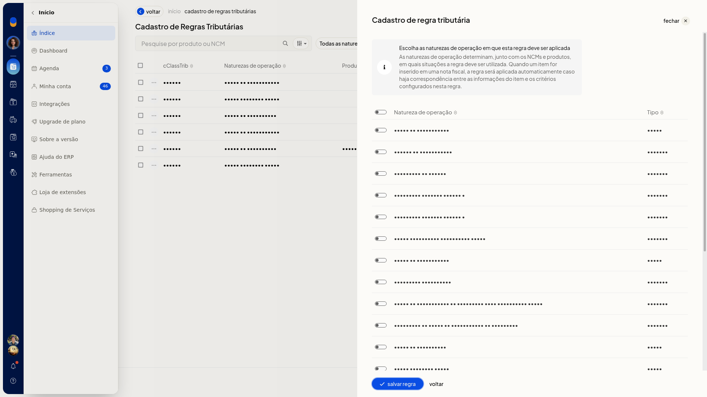
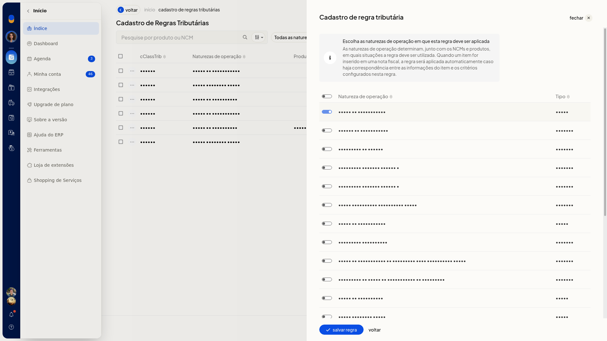

Cadastrar uma regra tributária da Reforma Tributária por NCM, produto e natureza
No ERP da Olist, a regra tributária específica define a classificação e as alíquotas de IBS e CBS para produtos que não devem seguir a regra geral da Reforma Tributária do Consumo. Você informa esses dados, o NCM e/ou o produto e as naturezas de operação em que a regra vale, para uso em NF-e e NFC-e.
O cadastro fica em Configurações > Configurações ERP > Tributação (RTC), na seção NFe e NFCe, em Cadastro de regras tributárias.
Pré-requisitos
- Naturezas de operação já cadastradas na empresa.
- NCM e/ou identificação do produto, quando a regra não for para qualquer NCM e produto.
- Se Cadastro de regras tributárias não aparecer, peça acesso ao administrador da conta.
Importante
- IBS Municipal aparece como 0,00 e não pode ser editado. IS fica em branco e também não pode ser editado.
- Com Aplicar para qualquer NCM e produto ligado, a regra vale para todos os itens. Desligue o interruptor para informar um NCM e/ou um produto.
- Voltar sai do cadastro e retorna a Tributação (RTC) sem criar a regra.
Instruções
-
Acesse Configurações > Configurações ERP > Tributação (RTC).

-
Em NFe e NFCe, acesse Cadastro de regras tributárias.
A tela informa: defina a regra específica de tributação a ser aplicada quando o produto não seguir a regra geral.

- Clique em Cadastrar regra tributária.
O primeiro passo é Dados do IBS/CBS.

-
Selecione CST. O campo não é obrigatório. As opções são:
- 000 - Tributação integral
- 010 alíquotas uniformes
- 011 alíquotas uniformes reduzidas
- 200 Alíquota reduzida
- 221 Alíquota fixa proporcional
- 400 Isenção
- 410 Imunidade e não incidência
- 510 Diferimento
- 515 Diferimento com redução de alíquota
- 550 Suspensão
- 620 Tributação Monofásica
- 800 Transferência de crédito
- 810 Ajuste de IBS na ZFM
- 811 Ajustes
- 820 Tributação em documento específico
- 830 Exclusão da Base de Cálculo
-
Informe cClassTrib. O campo não é obrigatório. Clique em Pesquisar, escolha o código e clique em Confirmar. Cancelar fecha a pesquisa sem aplicar um código novo.

-
Informe CBS e IBS UF. Os dois campos não são obrigatórios. Use vírgula como separador decimal, como em 0,90 e 0,10.

-
Clique em Avançar.
-
Mantenha Aplicar para qualquer NCM e produto ligado para cobrir todos os itens.

-
Desligue Aplicar para qualquer NCM e produto para informar um NCM e/ou um produto. O interruptor não é obrigatório.

-
Informe o NCM. O campo não é obrigatório. O código completo fica no formato 0000.00.00. Use ? para um grupo, por exemplo 8471.??.??.


- Adicione o produto pela busca de nome, SKU ou GTIN. Produto e Código (SKU) não são obrigatórios.


-
Clique em Avançar.
-
Marque as naturezas de operação que devem usar a regra. Natureza de operação não é obrigatória. Você pode marcar Venda de mercadorias (Saída).


- Clique em Salvar regra. A regra só é criada nesse clique.
Resultado
A regra salva fica em Cadastro de Regras Tributárias, com as colunas cClassTrib, Naturezas de operação, Produtos e NCMs, e um contador de quantidade.
Informações adicionais
- A lista de regras não oferece planilha, modelo nem importação.
- O cadastro de regras tributárias aparece em NFe e NFCe. A seção NFSe não tem esse cadastro.